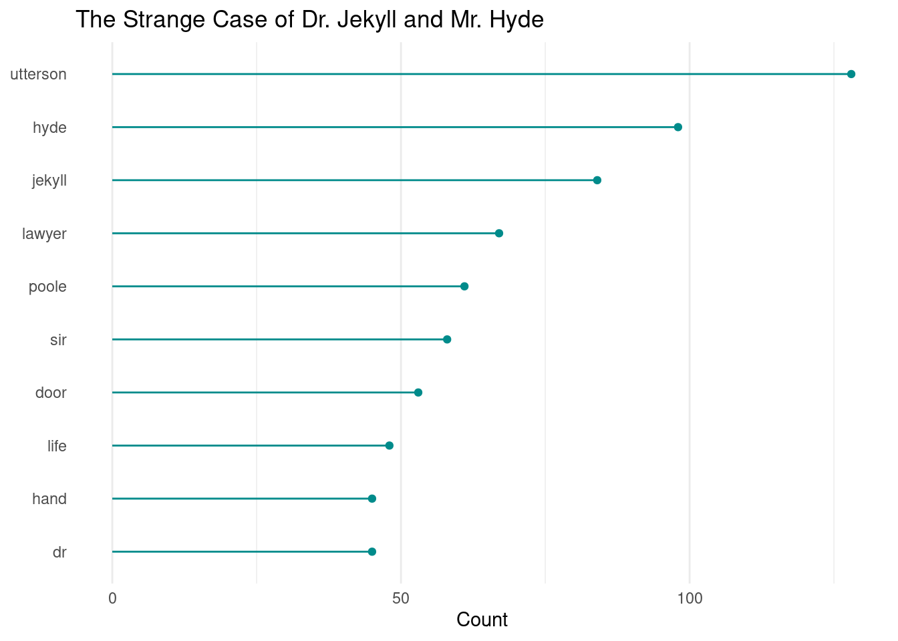

# ascending order pretty lollipop plotggplot(data = count_Jekyll, aes(x=reorder(word, n), y=n)) +geom_point(color="cyan4") +geom_segment(aes(x=word, xend=word, y=0, yend=n), color="cyan4") +coord_flip() +labs(title ="The Strange Case of Dr. Jekyll and Mr. Hyde",x =NULL,y ="Count") +theme_minimal() +theme(panel.grid.major.y =element_blank() )

explore unstructured text
library(tidytext) # tidy text toolslibrary(quanteda) # create a corpus
Warning in stringi::stri_info(): Your current locale is not in the list of
available locales. Some functions may not work properly. Refer to
stri_locale_list() for more details on known locale specifiers.
Warning in stringi::stri_info(): Your current locale is not in the list of
available locales. Some functions may not work properly. Refer to
stri_locale_list() for more details on known locale specifiers.